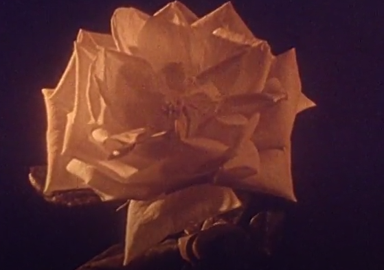
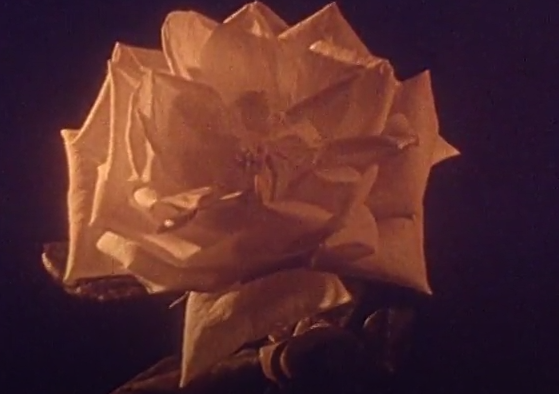
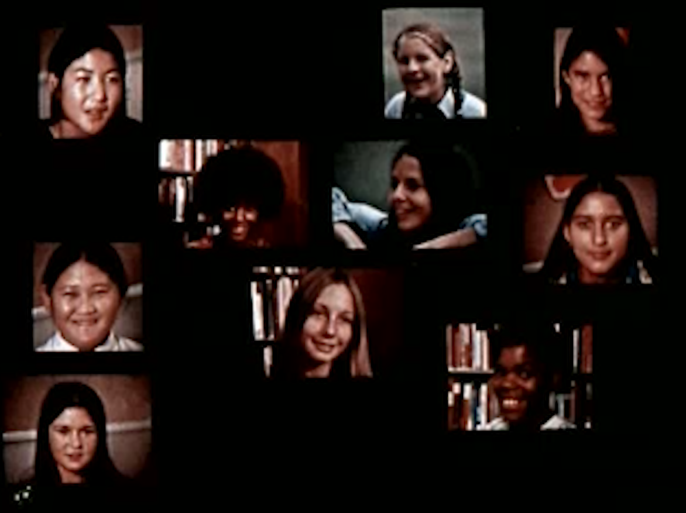
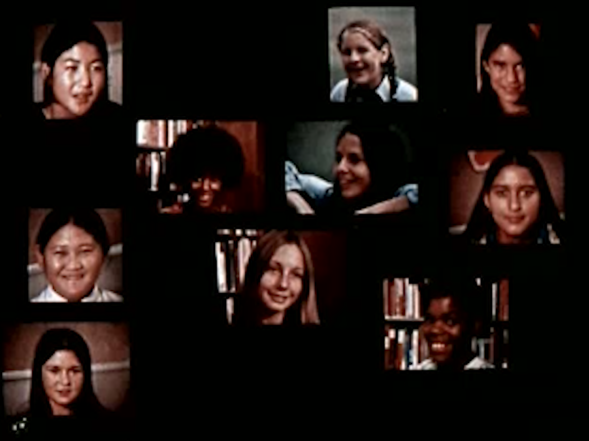

this was hell to make <3
but i hope you like it anyway

enjoy!
Reflection on this design:
My process consisted of a lot of inspiration collecting on the internet. A lot of this happened on Pinterest, but also on Google looking at images of the Southworth Planetarium itself. For this specific project, it was also on a very nostalgic location to me, so I used personal memories to fuel a lot of my design decisions as well. I decided on a couple key components I knew I wanted to incorporate, which ended up being space, specifically saturn's rings, the community aspect that the planetarium engages in (especially bringing in families and kids), and the nostalgic, retro theming. From there I went to sketching, saturn’s rings played theme in a lot of my designs… which got me to my final sketch of my design. The nostalgia and retro theme mostly informed color choices.
I got a lot of great feedback during the critique periods. Including trying a full sized image, which I then went back to AI and created a second design, making a full image, not just a cropped corner one like my original design had. I agreed that not having a full design may be difficult for some logo placement, so I wanted to make an alternative version. I also got critiques regarding color on dark backgrounds, which I agree, would need to be edited, and also got feedback to add shadows.
Especially looking at this from an outside perspective, I agree with needing an alternative for dark backgrounds and the full image. I did specifically leave it without shadows to lend to the 2d element and wanting it to feel really retro and sticker like. Looking further at the design, I think the rings and planet could be more smooth, though the crookedness does feel retro, I think to read properly it needs to be more exaggerated.
Reflection on this design:
These pieces juxtaposed with each other turned out in a way I am incredibly happy with. I set out with an explicit story to tell, and I feel like I accomplished that. I wanted to find a reawakening of the Y2k scare meeting our current AI scares of today, which was my biggest inspiration when creating these images.I worked a lot with color pallets, positioning of each image, and ensuring that it felt like the same place with jarring differences.
Stepping back from my art I think I could do a bit better with lighting, and meshing the images on top of each other to look like they really belong in the environment, and are not just photoshopped in (like they literally were). However, considering how long I spent tweaking light levels, I don’t hate it. I also wish I could find a way to hint more into that they are tied together, and find more details to add to hint at the simulation overlaying the real world. I wanted to have incorporated a few more elements, and allowed for even more to be going on in the images, but I did not want to overly crowd them, and take away from the focal points.
I got good feedback that my main figures in Glasses On looked a little flat, which depending on the design choice, could actually work in my favor. I did appreciate that feedback, but I was actually happy it read that way, as I was hoping to make them seem a little out of place, due to the fact that it was supposed to be a simulation.
Regardless, I think it reads well as a think piece, that is definitely pretty jarring comparing the two. I think it offers a pretty horror centered take on a possible reality that prays on current events, which is what I was hoping for. So overall, I am pretty proud of these works.
 

 

Reflection on this design:
In the beginning of this project, when I was imagining what it could be prior to any content restrictions, my vision was very different. However, once I launched into this project, saw what conent I was working with, and starting creating, its form really shifted, and molded into what it is now. I could not be happier about this. This project was very important to me and as I worked on it it became something I was incredibly proud to put out into the world. This video represents the conditioning and grooming that we push onto girls from even before they can make their own choices. Onsies and toys gender and push them in a direction of sexualizaiton and the expectation of objectification by men before they even know what sex is. This has always disgusted me and I find it is not something that gets discussed enough, even with feminism becoming more prevelant and talked about.
This video represents the "shift" from a girl to a woman, yet how blurry those lines really are. I used a lot of clips from menstration education videos, which emphsized the fact that as soon as you get your period, you are a woman. The moment you are a woman, you are ready and willing to be sexualized by men. At least that is what a lot of the videos I watched were hinting to. I purposefully choice to size my video when there were underage girls differently from adult women to represent this very fine yet crucial line. I also chose audio clips to tie in seemingly unrelated content, connecting it back into the bigger picture and its importance. Flowers blooming and wilting represent the coming of age and how easily it can be destroyed and beaten down. This video aims to inform and critique the conditioning and grooming of young girls, and to encourage breaking away from this mold by empowering women.
Stepping back from my art, I think that this is a pretty solid piece of work. The video clips, audio, and editing styles are consistent and used fluidly throughout. It is jerky and random, but eludes to the nature of the content. The audio choices make it abraidsive and uncomfortable paired with the video, but it feels like it should. It shouldn't be comfortable. Choices feel purposeful and explicit. If I had more time with it, it would have been nice to see more clips from different videos and more content or audio clips that tie things togetether. I spent a lot of time weeding through seemingly unrelated videos finding absolute gems of content, and with more time on the project, I may have been able to find more. However, overall I am conent with how this video turned out and especially proud of the message it conveys.
Note: I showed this project to my teacher in my Psychology Class (cross listed with WGS) and she loved it so much she shared it in our class and we had an entire discussion around the message it provokes. It was a really special moment and I got to have a live discussion on how people felt about this piece. When we started the discussion, I had people in tears tell me how much it resonated with them and how much it felt like a visualization of the expectations, hardships, and sexualizations of being a woman.


Reflection on this design:
This is by far the hardest thing I have done for this class. 3D modeling is hard, and Blender is hard. Challenges are a good thing, but I definitely have a lot of respect for people who are proficient in this program. When I started tackling this project and I did my donut, I was super happy with it, and had a fairly easy time following along... but then when I was following other tutorials to try to find what I needed for my own work, I really struggled. This required a lot of stepping back and taking time off between work sessions, which really pushed me in a way that I hadn't been before. I am used to taking breaks from art, but not to decompress like I did for this project. This also took way longer than I would have thought... I spent way longer on this than I do most of my digital art. I don't think I've ever gotten so frustrated with my computer. I also at one point ended up losing hours of work, and so getting back to where I was - also was a big feat.
With that being said, I worked really hard on this nonetheless. I tried really hard to get it as close to the shape as possible, even trying to recreate the odd little bumps around the ears and top of the head that my lap has has. I had always thought the lamp was really smooth, but after hours of inspecting, I found dozens of imperfections. I went in to create the buttons, and base plate, and spent a lot of time detailing it to get it to look like my lamps details. The lamp itself is this matte with a slight shine, silicone white, with stamped on eyes and mouth, so I tried to recreate the look to the best of my abilities. I learned a lot about moving the mesh, sizing, reshaping, cutting (love that cut took), sculpting, and then finished off with texture painting.
Finally, when stepping back from this work, I think for a first time using Blender this is fantastic. I know people who work in digital art (specifically game design) who told me that even they won't touch 3D modeling if they can help it, and that that considered, I did well, and I am inclined to agree with them. I think that there is a lot I could still learn, but most of the learning is within the program itself. Blender is not forgiving, and neither is 3D modeling as a whole. To really perfect this piece I feel like I would need to learn a whole lot more, and dedicate hours of practice to the program. I think I could have perfected the shape a little more, specifically the size and the ear ratio to the rest of the body. But knowing what I know - I spent hours trying to get it perfect, watching tutorials, and trying to get it to be as close as I could.